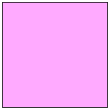
P = 1
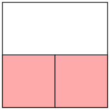
P = 1/22 = .25
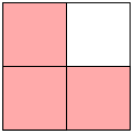
P = 1/23 = .125

P = 1/24 = 6.25 × 10–2
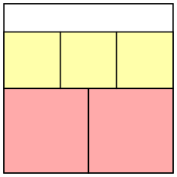
P = 1/3322 = 9.25 × 10–3
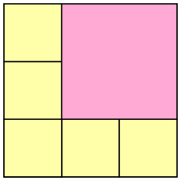
P = 2/36 = 2.74 × 10–3
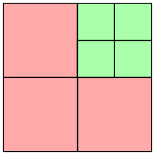
P = 1/211 = 4.88 × 10–4
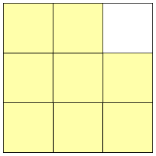
P = 1/38 = 1.52 × 10–4
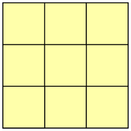
P = 1/39 = 5.08 × 10–5
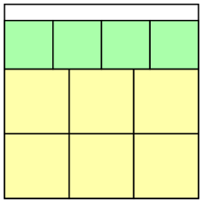
P = 1/2836 = 5.35 × 10–6
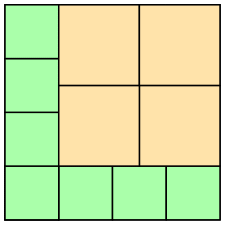
P = 34/226 = 1.20 × 10–6
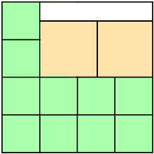
P = 9/226 = 1.34 × 10–7
(MM)
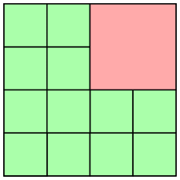
P = 1/225 = 2.98 × 10–8
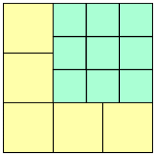
P = 29/323 = 5.43 × 10–9
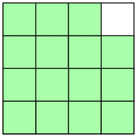
P = 1/230 = 9.31 × 10–10
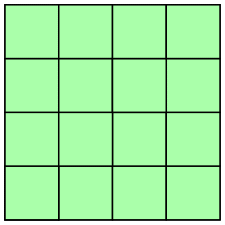
P = 1/232 = 2.32 × 10–10
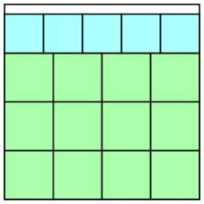
P = 1/55224 = 1.90 × 10–11
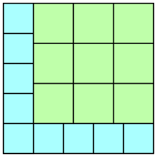
P = 218/51839 = 3.49 × 10–12
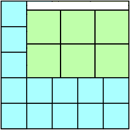
P = 212/51936 = 2.94 × 10–13
(MM)
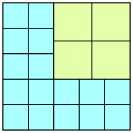
P = 34/52024 = 5.30 × 10–14
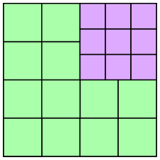
P = 1/39233 = 5.91 × 10–15
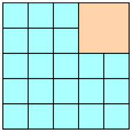
P = 2/522 = 8.38 × 10–16
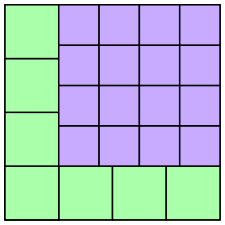
P = 316/278 = 1.42 × 10–16
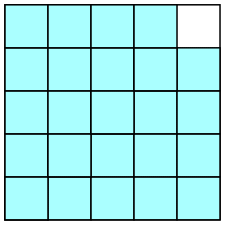
P = 1/524 = 1.67 × 10–17
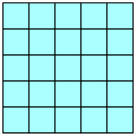
P = 1/525 = 3.35 × 10–18
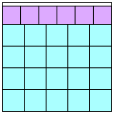
P = 1/66520 = 2.24 × 10–19
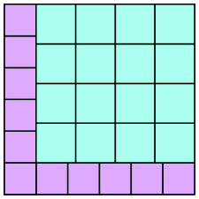
P = 516/327259 = 3.47 × 10–20
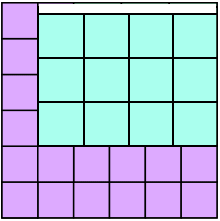
P = 512/328252 = 2.36 × 10–21
(MM)
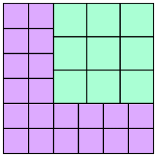
P = 1/338211 = 3.61 × 10–22
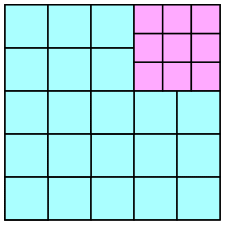
P = 29/53039 = 2.79 × 10–23